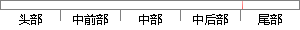

对每个步骤的测试逐一通过后再执行下一阶段的测试，对于各个阶段的测试归结如下。
片段位置图

相似结果|
相似片段 1：的每个阶段中各个步骤或检查点通过或失败的详细说明。 反馈测试结果：自动化测试执行的测试日志将反馈给测试管理模块的进行测试结果分析和整合，生成一份完整的测试报告。如表 6-1所示。功能描述如下：用户登录是指管理用户登录本系统的相关功能集。
|
※ 片段修改建议 ※
近似词参考：- 每个：每一个
- 步骤：步调
- 逐一：一一 逐个
- 通过：经由过程
- 过后：事后
- 执行：履行 实行
- 对于：对 对付
- 如下：以下
系统自动生成语句：对每一个步调的测试一一经由过程后再履行下一阶段的测试，对各个阶段的测试归结以下。
注：本片段修改建议为系统自动生成，仅供参考。